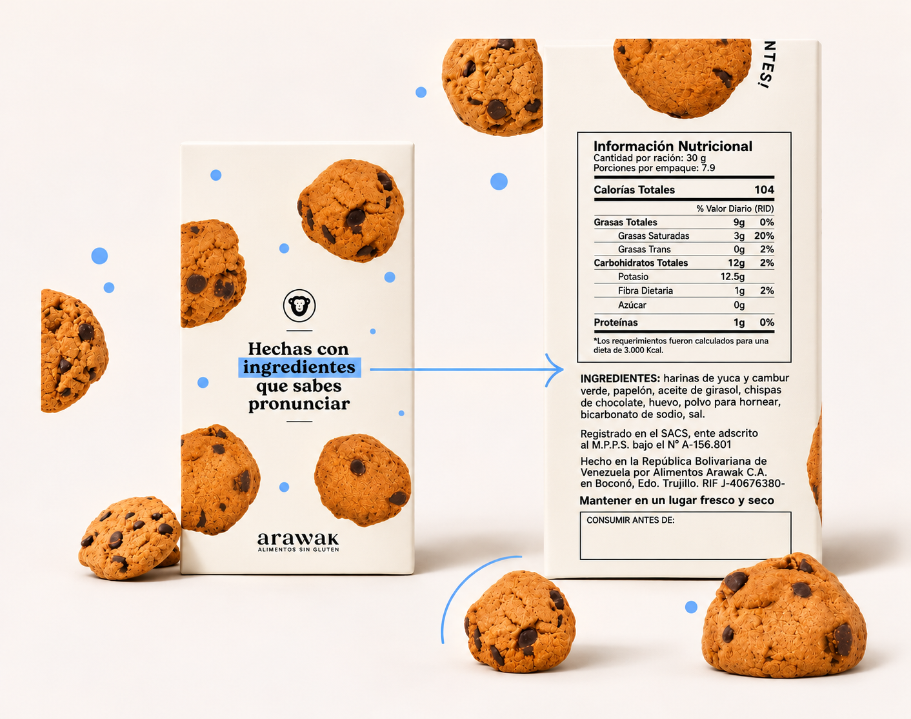

HARINANA
Convertir la verdad del producto en valor de marca.
Una evolución del empaque basada en una idea simple: que el propio producto demuestre la promesa de la marca.


ESTRATEGIA
MOSTRAR EL PRODUCTO REAL
Destacar la galleta real y convertir su apariencia natural en parte central de su valor.
HACERLA SENTIR ACTUAL
Actualizar el sistema visual y la paleta de colores para darle a la marca una imagen más actual y dinámica.
HACER QUE LA GENTE LEA
Dirigir la atención del consumidor hacia el verdadero diferenciador: sus ingredientes.

DE LA PROMESA A LA ACCIÓN
“Hechas con ingredientes que sabes pronunciar.”
El mensaje no se queda en el frente del empaque. Invita a revisar la lista de ingredientes y convierte la transparencia en una interacción real con el consumidor.